كيف تقرأ هذا الدليل؟
لوحة التحكم مكتوبة بالإنكليزية، لذلك كل زر أو كلمة تظهر على الشاشة مكتوبة في هذا الدليل بهذا الشكل:
Approve — حتى تجدها بسهولة. الشرح بجانبها بالعربي.
إذا كان وقتك ضيقاً
اقرأ الفصل 1 (كيف يعمل النظام)، والفصل 3 (الإعداد الأول)، والفصل 16 (المهام اليومية). هذا يكفي للبدء.
1
كيف يعمل النظام؟
النظام مؤلف من ثلاثة أجزاء تعمل معاً:
📱 تطبيق الموبايل
تطبيق واحد للجميع. كل شخص يسجّل كـ راكب، ويستطيع أن يطلب أن يصبح سائقاً أو صاحب سيارة للإيجار.
🖥️ لوحة التحكم
هذا ما تستخدمه أنت كمدير: الموافقة على السائقين، الأسعار، الحسابات، والمراقبة.
⚙️ الخادم (السيرفر)
يحفظ كل البيانات ويربط الركاب بالسائقين. لا تحتاج للتعامل معه مباشرة.
رحلة المشوار من البداية للنهاية
الراكب يطلبيختار الوجهة ويرى السعر قبل الطلب
←
السائقون القريبونيصلهم الطلب على هواتفهم
←
أول سائق يقبليأخذ المشوار
←
وصل · بدأ · انتهىالراكب يرى السائق على الخريطة
←
الدفع نقداًالراكب يدفع للسائق مباشرة
كيف تربح المنصّة؟
الراكب يدفع للسائق نقداً. لذلك المنصّة لا تستلم المال من الراكب، بل السائق يصبح مديناً للمنصّة. كل سائق يختار عند التسجيل واحدة من خطتين:
الخطة
كيف تعمل
مثال
عمولةCOMMISSION
بعد كل مشوار مكتمل، تُضاف نسبة من الأجرة على حساب السائق (دَين عليه).
مشوار بـ $5 وعمولة 10% ← السائق مدين بـ $0.50
اشتراك شهريMONTHLY
السائق يدفع مبلغاً ثابتاً كل شهر ويأخذ كل أجرة المشاوير. لا يستطيع العمل إلا إذا كان اشتراكه فعّالاً.
تاكسي $30 بالشهر، توك توك $15
أصحاب سيارات الإيجار يدفعون عمولة إيجار على كل حجز مكتمل (إلا سيارات المنصّة نفسها).
مهمالسائق يدفع لك (نقداً، Whish، OMT…) خارج التطبيق. أنت تسجّل هذه الدفعة في صفحة Billing حتى يُخصم الدَين من حسابه. إذا تجاوز دَين السائق الحدّ الأقصى، لن يستطيع استقبال مشاوير حتى يدفع.
رحلة الإيجار
صاحب السيارةيضيف سيارته
←
أنت توافقعلى السيارة Approve
←
الزبون يحجزيختار التواريخ
←
صاحب السيارة يؤكدثم يسلّم السيارة
←
إرجاع السيارةتُحسب العمولة
2
الدخول والقائمة الرئيسية
تسجيل الدخول
افتح رابط لوحة التحكم في المتصفح (Chrome أو Edge).
اكتب رقم الهاتف في خانة Phone (مثلاً 70000000) وكلمة السر في Password.
اضغط Sign in.
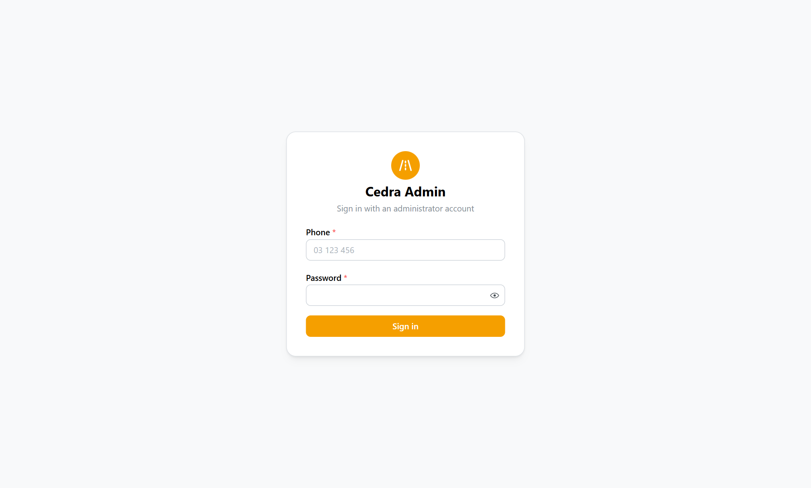
شاشة الدخول
الأمانفقط حسابات المدير تستطيع الدخول. لا تعطِ كلمة السر لأحد، واضغط Log out (أعلى الشاشة) عند استخدام كمبيوتر مشترك.
القائمة الجانبية
على الشاشة
المعنى
ماذا تفعل هنا؟
Dashboard
لوحة المعلومات
نظرة سريعة على اليوم: مشاوير، طلبات تنتظر الموافقة، ديون.
Drivers
السائقون
قبول أو رفض أو إيقاف السائقين ومراجعة أوراقهم.
Car owners
أصحاب السيارات
قبول أصحاب سيارات الإيجار (أفراد أو مكاتب).
Rental listings
سيارات الإيجار
الموافقة على السيارات المعروضة، وإضافة سيارات المنصّة.
Rides
المشاوير
متابعة كل المشاوير وإلغاء مشوار عالق.
Rental bookings
حجوزات الإيجار
متابعة الحجوزات، وإدارة حجوزات سيارات المنصّة.
Pricing
الأسعار
اختيار طريقة التسعير لكل نوع مركبة.
Places
الأماكن
البلدات والمناطق (المنية، طرابلس…).
Route fares
أسعار الخطوط
السعر الثابت بين مكانين (مثلاً المنية ← طرابلس).
Billing
الحسابات المالية
ديون السائقين، تسجيل الدفعات، تفعيل الاشتراك الشهري.
افعل هذه الخطوات مرة واحدة قبل أن تعلن عن التطبيق. الترتيب مهم.
الإعدادات (Settings): اكتب نسبة العمولة، رسوم الاشتراك الشهري، سعر صرف الدولار بالليرة، الحد الأقصى للدَين، ورقم هاتف الدعم. ← الفصل 15.
الأماكن (Places): تأكد من مواقع البلدات الموجودة (المنية، دير عمار، البداوي، طرابلس…) وأضف الأحياء أو القرى التي تحتاجها. ← الفصل 11.
أسعار الخطوط (Route fares): اكتب السعر الحقيقي المتعارف عليه في الشارع لكل خط، للتاكسي وللتوك توك. ← الفصل 12.
الأسعار (Pricing): اختر Fixed route إذا تريد استعمال أسعار الخطوط، واكتب سعر الكيلومتر الاحتياطي للمشاوير خارج الخطوط. ← الفصل 10.
سيارات المنصّة (اختياري): إذا عندك سيارات للإيجار تملكها أنت، أضفها من Rental listings ← Platform cars. ← الفصل 7.
جرّب بنفسك: سجّل من هاتفك كراكب، ومن هاتف آخر كسائق، وافق على السائق، واطلب مشواراً تجريبياً حتى النهاية.
الأسعار التجريبيةالأسعار والمواقع الموجودة الآن في النظام هي أمثلة للبداية فقط. راجعها كلها قبل الإطلاق.
قائمة تحقّق سريعة
نسبة العمولة صحيحة (Ride commission).
رسوم الاشتراك الشهري للتاكسي والتوك توك صحيحة.
سعر صرف الليرة محدَّث (LBP rate).
رقم الدعم صحيح (يظهر للركاب في التطبيق).
كل بلدة مهمة موجودة في Places وموقعها صحيح.
أسعار الخطوط الأساسية مكتوبة للتاكسي وللتوك توك.
جرّبت مشواراً كاملاً من الطلب حتى الدفع.
4
لوحة المعلومات
Dashboard
أول صفحة تراها بعد الدخول. تتحدّث وحدها كل دقيقة. اضغط على أي بطاقة لتذهب إلى صفحتها.
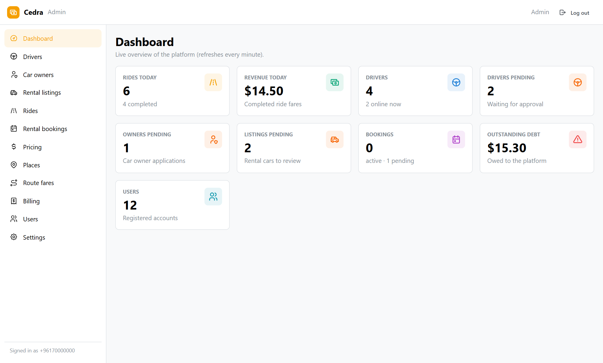
لوحة المعلومات
البطاقة
معناها
RIDES TODAY
عدد المشاوير المطلوبة اليوم، وتحتها عدد المكتملة.
REVENUE TODAY
مجموع أجرة المشاوير المكتملة اليوم (المال الذي دفعه الركاب للسائقين، وليس ربح المنصّة).
DRIVERS
عدد السائقين، وكم منهم متصل الآن (online) ويستقبل مشاوير.
DRIVERS PENDING
سائقون سجّلوا وينتظرون موافقتك. راجعها يومياً.
OWNERS PENDING
أصحاب سيارات إيجار ينتظرون الموافقة.
LISTINGS PENDING
سيارات إيجار جديدة تنتظر الموافقة قبل أن تظهر للزبائن.
BOOKINGS
حجوزات الإيجار الجارية الآن، والحجوزات التي تنتظر تأكيد صاحب السيارة.
OUTSTANDING DEBT
مجموع ما يدين به السائقون وأصحاب السيارات للمنصّة.
USERS
عدد كل الحسابات المسجّلة.
5
السائقون
Drivers
السائق يسجّل بنفسه من التطبيق: يكتب معلومات المركبة، يختار خطته (عمولة أو شهري)، ويرفع صور أوراقه. بعدها يظهر عندك بحالة PENDING ولا يستطيع العمل حتى توافق.
قائمة السائقين — الصفحة تفتح على السائقين بانتظار الموافقة
في أعلى الصفحة أزرار للتصفية: All الكل، Pending بالانتظار، Approved مقبول، Rejected مرفوض، Suspended موقوف. ويمكنك البحث بالاسم أو الهاتف أو رقم اللوحة.
كيف توافق على سائق جديد
اضغط على اسم السائق. تفتح لوحة على الجانب فيها كل التفاصيل.
راجع معلومات المركبة (Vehicle): النوع، الماركة، اللون، رقم اللوحة.
انزل إلى الأوراق (Documents) واضغط على كل صورة لتكبيرها.
إذا كان كل شيء صحيحاً اضغط Approve. السائق يصله إشعار فوراً ويستطيع العمل.
إذا في مشكلة اضغط Reject واكتب السبب بوضوح (مثلاً: "صورة الرخصة غير واضحة"). السائق يرى السبب ويستطيع التقديم من جديد.
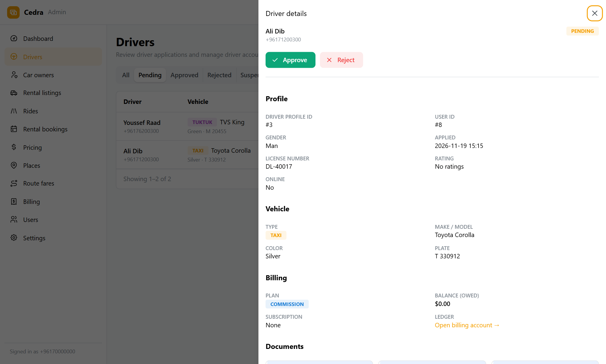
تفاصيل السائق مع زرّي الموافقة والرفض
ماذا تتحقّق في الأوراق؟
الهوية (ID CARD): الاسم يطابق الاسم في التطبيق.
رخصة القيادة (DRIVER LICENSE): غير منتهية، ورقمها يطابق رقم الرخصة المكتوب.
دفتر السيارة (CAR REGISTRATION): رقم اللوحة يطابق، وللتاكسي يجب أن تكون لوحة عمومية.
التأمين (INSURANCE): ساري المفعول.
صورة المركبة (VEHICLE PHOTO): نفس اللون والنوع.
إيقاف سائق أو إعادة تفعيله
إذا وصلتك شكاوى عن سائق مقبول، افتحه واضغط Suspend واكتب السبب. يتم فصله فوراً ولا يستطيع استقبال مشاوير. لإرجاعه اضغط Reactivate.
الحالة الآن
الأزرار المتاحة
PENDING بالانتظار
Approve قبول · Reject رفض
APPROVED مقبول
Suspend إيقاف
SUSPENDED موقوف
Reactivate إعادة تفعيل
REJECTED مرفوض
Approve (إذا غيّرت رأيك) — أو ينتظر أن يقدّم السائق من جديد
معلومةفي لوحة السائق ترى أيضاً خطته (PLAN)، دَينه (BALANCE (OWED))، اشتراكه الشهري، ورابط Open billing account لفتح حسابه المالي مباشرة.
6
أصحاب السيارات
Car owners
أي مستخدم يريد أن يؤجّر سيارته يقدّم طلباً من التطبيق كـ فرد (INDIVIDUAL) أو مكتب تأجير (AGENCY) مع اسم المكتب، ويرفع أوراقه.
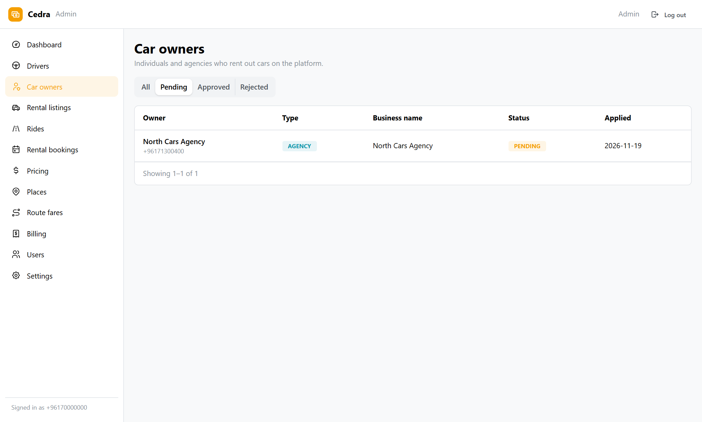
قائمة أصحاب السيارات
اضغط على الاسم لفتح التفاصيل والأوراق (الهوية، سجل تجاري للمكاتب).
اضغط Approve للموافقة، أو Reject مع كتابة السبب.
بعد الموافقة يستطيع صاحب السيارة إضافة سياراته من التطبيق. كل سيارة تحتاج موافقتك أيضاً (الفصل 7).
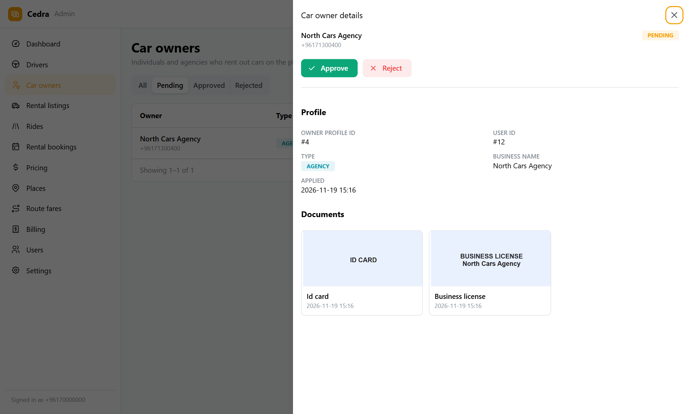
تفاصيل مكتب تأجير بانتظار الموافقة
الموافقة على صاحب السيارة ≠ الموافقة على سياراتهالموافقة هنا تعني أنك تثق بالشخص أو المكتب. كل سيارة يضيفها تمرّ بمراجعة منفصلة.
7
سيارات الإيجار وسيارات المنصّة
Rental listings
الصفحة فيها تبويبان: All listings لكل السيارات، وPlatform cars لسياراتك أنت.
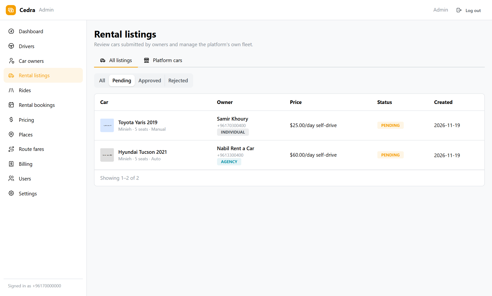
كل السيارات المعروضة للإيجار
الموافقة على سيارة
اختر Pending لترى السيارات الجديدة.
اضغط على السيارة. راجع الصور، السنة، عدد المقاعد، السعر اليومي، والتأمين (Deposit).
اضغط Approve فتظهر السيارة للزبائن فوراً، أو Reject مع السبب (مثلاً: "الصور غير واضحة" أو "السعر غير منطقي").
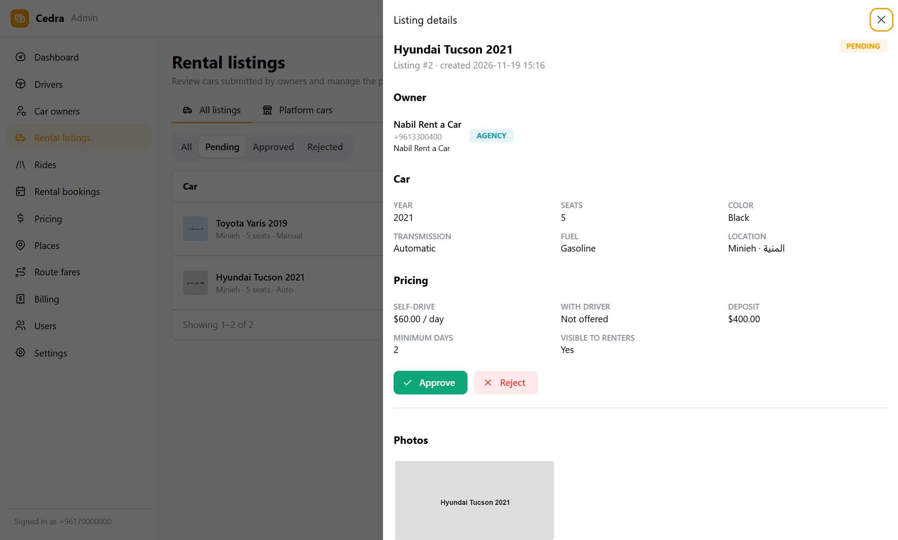
تفاصيل سيارة بانتظار الموافقة
تنبيهإذا غيّر صاحب السيارة الماركة أو الموديل أو السنة أو الوصف لسيارة مقبولة، ترجع السيارة إلى PENDING وتحتاج موافقتك من جديد. تغيير السعر أو إخفاء السيارة لا يحتاج موافقة.
سيارات المنصّة (سياراتك أنت)
إذا كانت الشركة تملك سيارات للإيجار، أضفها من هنا. سيارات المنصّة تُقبل تلقائياً ولا يُحسب عليها عمولة.
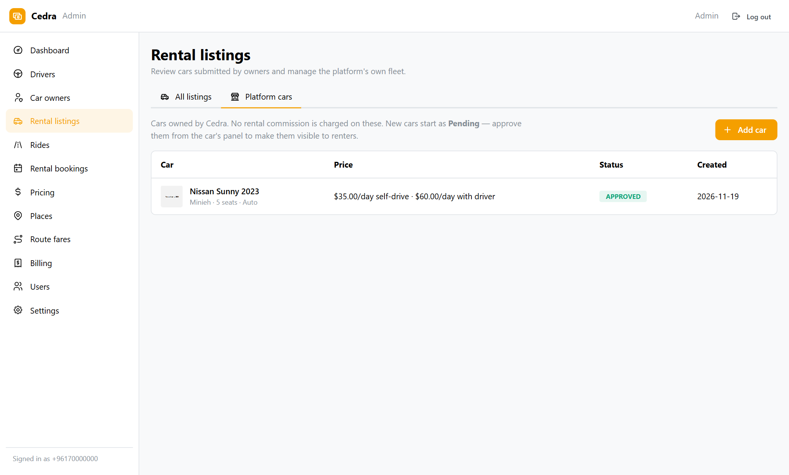
تبويب سيارات المنصّة
اضغط Add car.
املأ: الماركة Make، الموديل Model، السنة Year، المقاعد Seats، اللون Color، ناقل الحركة Transmission، الوقود Fuel، ومكان السيارة Location (place).
اختر طريقة الإيجار: Self-drive available (الزبون يقود بنفسه) و/أو With driver available (مع سائق)، واكتب السعر اليومي لكل واحدة.
اكتب التأمين Deposit (يُدفع باليد عند الاستلام) وأقل عدد أيام Minimum days.
اضغط Create car، ثم افتح السيارة وأضف صورها (حتى 6 صور).
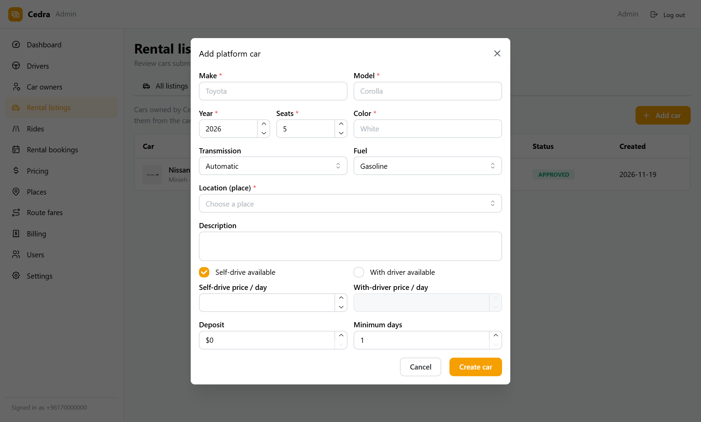
نموذج إضافة سيارة للمنصّة
إخفاء سيارة مؤقتاًإذا كانت السيارة في التصليح، أوقف ظهورها بإلغاء Active (visible to renters) بدل حذفها. تبقى الحجوزات القديمة محفوظة.
8
المشاوير
Rides
هنا ترى كل مشاوير التاكسي والتوك توك، الأحدث أولاً. اضغط على أي مشوار لترى تفاصيله الكاملة.
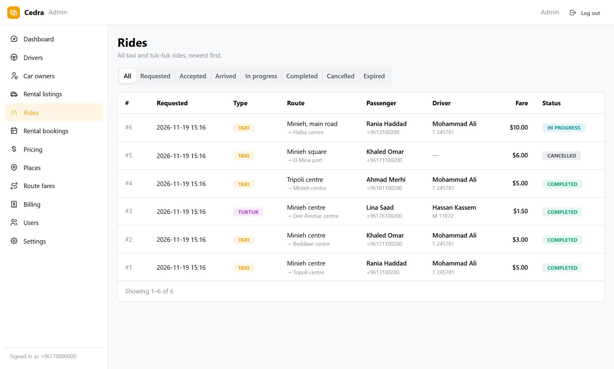
قائمة المشاوير
معنى حالات المشوار
الحالة
المعنى
REQUESTED
الراكب طلب، والطلب أُرسل للسائقين القريبين، ولم يقبله أحد بعد.
ACCEPTED
سائق قبل المشوار وهو في الطريق إلى الراكب.
ARRIVED
السائق وصل إلى مكان الراكب.
IN PROGRESS
الراكب في السيارة والمشوار جارٍ.
COMPLETED
انتهى المشوار ودفع الراكب نقداً. هنا تُحسب العمولة.
CANCELLED
أُلغي من الراكب أو السائق أو منك.
EXPIRED
لم يقبل أي سائق خلال الوقت المحدد (الافتراضي 60 ثانية). يستطيع الراكب الطلب من جديد.
افتح الحجز. يظهر قسم Platform car — you are the owner مع الأزرار.
اضغط Confirm لتأكيد الحجز (أو Reject إذا السيارة غير متاحة).
يوم التسليم: تحقّق من رخصة الزبون، خذ التأمين باليد، ثم اضغط Car handed over (start).
عند إرجاع السيارة: افحصها، أرجع التأمين، واضغط Car returned (complete).
مهم عن الإيجار
تاريخ الإرجاع لا يُحسب يوماً: من 12 إلى 15 = 3 أيام.
الإيجار بدون سائق يحتاج أن يرفع الزبون صورة رخصة القيادة قبل الحجز — التطبيق يمنعه إن لم يفعل.
النظام يمنع حجزين لنفس السيارة في نفس الأيام.
التأمين Deposit يُدفع ويُرجع باليد، التطبيق يعرضه فقط.
10
الأسعار
Pricing
لكل نوع مركبة (تاكسي، توك توك) تختار طريقة من اثنتين:
1) سعر ثابت للخطوط Fixed route
مثل الشارع تماماً: "من المنية لطرابلس 5 دولار". تكتب الأسعار في صفحة Route fares. إذا لم يوجد سعر للخط، يُحسب السعر تلقائياً بالطريقة الثانية.
2) سعر محسوب Calculated
مثل أوبر: السعر حسب المسافة والوقت. يُطبّق على كل المشاوير ويتجاهل أسعار الخطوط.
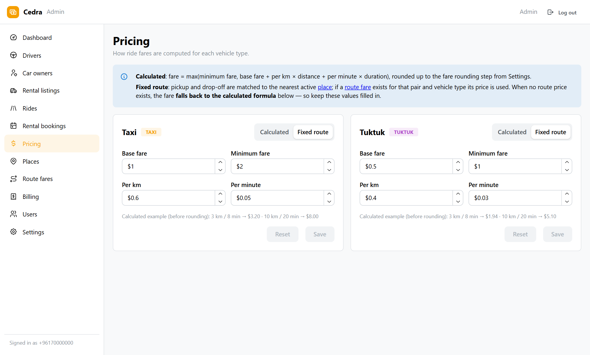
صفحة الأسعار — بطاقة لكل نوع مركبة
كيف يُحسب السعر المحسوب؟
الخانة
معناها
Base fare
فتحة العداد: مبلغ ثابت لكل مشوار.
Per km
سعر كل كيلومتر.
Per minute
سعر كل دقيقة من مدة المشوار.
Minimum fare
أقل سعر ممكن لأي مشوار مهما كان قصيراً.
مثال
فتحة عداد $1 + كيلومتر $0.60 + دقيقة $0.05. مشوار 10 كم يأخذ 20 دقيقة: 1 + (0.60 × 10) + (0.05 × 20) = $8.00
ثم يُقرَّب للأعلى حسب إعداد التقريب (مثلاً لأقرب نصف دولار). وإذا خرج السعر أقل من الحد الأدنى، يُؤخذ الحد الأدنى.
تغيير الأسعار
اختر Calculated أو Fixed route في البطاقة.
عدّل الأرقام. تحت الخانات ترى أمثلة تتحدّث مباشرة (3 كم و 10 كم).
اضغط Save. السعر الجديد يُطبّق على الطلبات الجديدة فقط، وليس على المشاوير الجارية.
نصيحةحتى لو تستعمل Fixed route، املأ أرقام الحساب بشكل منطقي — لأنها تُستعمل لأي مشوار ليس له سعر خط.
11
الأماكن
Places
"المكان" هو بلدة أو منطقة (المنية، طرابلس، البداوي…). تُستعمل لثلاثة أشياء: أسعار الخطوط الثابتة، قائمة الوجهات السريعة في التطبيق، ومكان سيارات الإيجار.
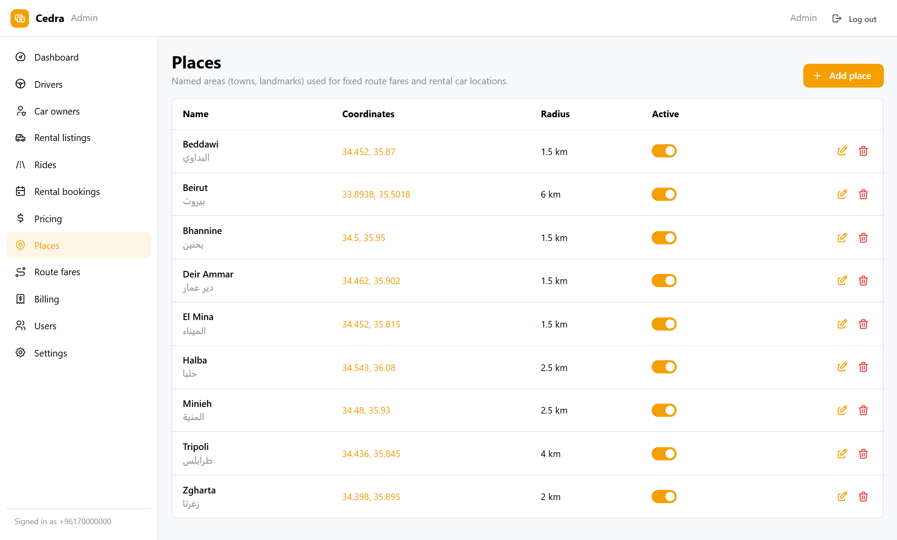
قائمة الأماكن
ما هو نصف القطر Radius؟
المكان هو دائرة على الخريطة: المركز (خط العرض والطول) ونصف القطر بالكيلومتر. إذا كان الراكب داخل الدائرة، يعتبره النظام "في المنية" مثلاً.
مثالالمنية بنصف قطر 2.5 كم: أي راكب على بعد أقل من 2.5 كم من وسط المنية يُعتبر في المنية، فيأخذ سعر الخط الثابت المنية ← طرابلس.
إضافة مكان جديد
افتح Google Maps، اضغط بالزر الأيمن على وسط البلدة، وانسخ الرقمين الظاهرين (مثلاً 34.4800, 35.9300). الأول هو Latitude والثاني Longitude.
في لوحة التحكم اضغط Add place.
اكتب الاسم بالإنكليزية Name (English) وبالعربية Name (Arabic)، والصق الرقمين، واختر نصف القطر Radius.
اضغط Save.
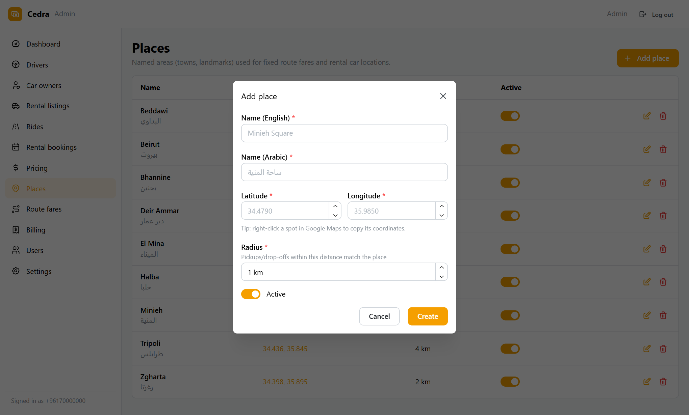
نموذج إضافة مكان
نصائح مهمة
لا تجعل الدوائر كبيرة جداً: إذا تداخلت دائرتان، النظام يختار الأقرب للمركز.
للبلدة الصغيرة 1 – 1.5 كم يكفي، للمدينة الكبيرة (طرابلس) 3 – 4 كم.
لا تحذف مكاناً عليه سيارات إيجار — النظام يمنع ذلك. بدلاً من ذلك ألغِ تفعيله (Active)، فيختفي من التطبيق ومن حساب الأسعار.
12
أسعار الخطوط الثابتة
Route fares
هنا تكتب السعر المتعارف عليه بين مكانين. يعمل فقط لنوع المركبة الذي اخترت له Fixed route في صفحة الأسعار.
أسعار الخطوط: لكل خط سعر للتاكسي وسعر للتوك توك، مع قيمته بالليرة
إضافة خط
اضغط Add route fare.
اختر منFrom وإلىTo.
اختر نوع المركبة Vehicle type: تاكسي أو توك توك. (للنوعين أضف خطّين.)
اكتب السعر بالدولار في Price. الليرة تُحسب تلقائياً من سعر الصرف.
اترك Bidirectional مفعّلاً إذا كان السعر نفسه بالاتجاهين (المنية ← طرابلس = طرابلس ← المنية).
اضغط Save.
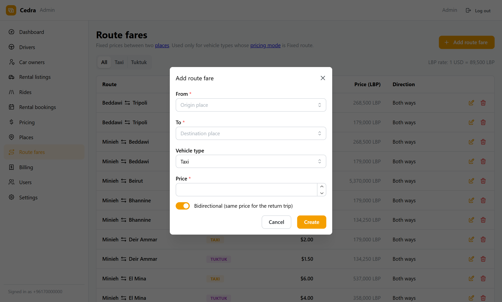
نموذج إضافة سعر خط
لماذا لم يُطبّق السعر الثابت على مشوار؟
تحقّق من ثلاثة أشياء: (1) نوع المركبة على Fixed route في صفحة الأسعار. (2) مكان الانطلاق والوصول كلاهما داخل دائرة مكان مفعّل. (3) يوجد سعر لهذا الخط ولهذا النوع من المركبات.
لا يمكن تكرار الخطإذا حاولت إضافة نفس الخط لنفس نوع المركبة مرتين، يظهر لك تنبيه. عدّل السعر الموجود بدلاً من ذلك (أيقونة القلم).
13
الحسابات المالية
Billing
لكل سائق وصاحب سيارة "حساب" يشبه دفتر الدَّين في الدكان: كل عمولة أو اشتراك تُضاف عليه، وكل دفعة تُخصم منه.
قائمة الحسابات: الرصيد، الخطة، وحالة الاشتراك لكل شخص
كيف تقرأ الرصيد؟
الرقم
المعنى
+$12.00 (أحمر)
الشخص مدين للمنصّة بهذا المبلغ.
$0.00
لا شيء عليه.
-$5.00 (أخضر)
دفع أكثر من المطلوب — له رصيد عند المنصّة.
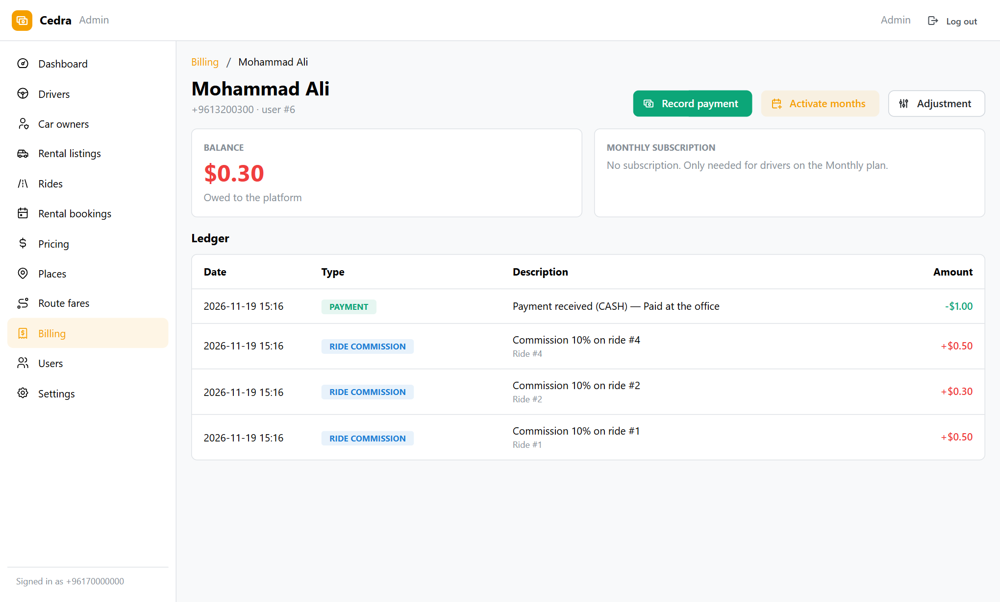
حساب سائق: الرصيد، الاشتراك، وسجلّ كل الحركات
في السجلّ (Ledger) ترى كل حركة: RIDE COMMISSION عمولة مشوار، RENTAL COMMISSION عمولة إيجار، SUBSCRIPTION FEE رسوم اشتراك، PAYMENT دفعة، ADJUSTMENT تعديل يدوي.
تسجيل دفعة من سائق
عندما يدفع لك السائق (نقداً، Whish، OMT…)، افتح حسابه من Billing.
اضغط Record payment.
اكتب المبلغ بالدولار في Amount received، اختر طريقة الدفع CASH / WHISH / OMT / OTHER، واكتب ملاحظة Note إن أردت (مثلاً رقم التحويل).
اضغط Record payment. الرصيد ينقص فوراً والسائق يصله إشعار.
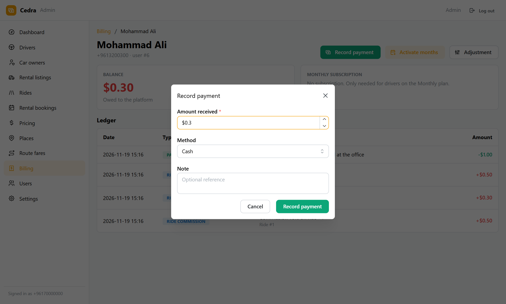
تسجيل دفعة
تفعيل الاشتراك الشهري
السائق على الخطة الشهرية لا يستطيع العمل إلا إذا كان اشتراكه فعّالاً.
افتح حساب السائق واضغط Activate months.
اختر عدد الأشهر (1، 2، 3، 6، 12).
اضغط Activate 1 month (يتغيّر الرقم حسب اختيارك). يُضاف الرسم على حسابه، ويمتد الاشتراك من تاريخ انتهائه الحالي (لا يضيع أي يوم).
عندما يدفع، سجّل الدفعة كما في الأعلى.
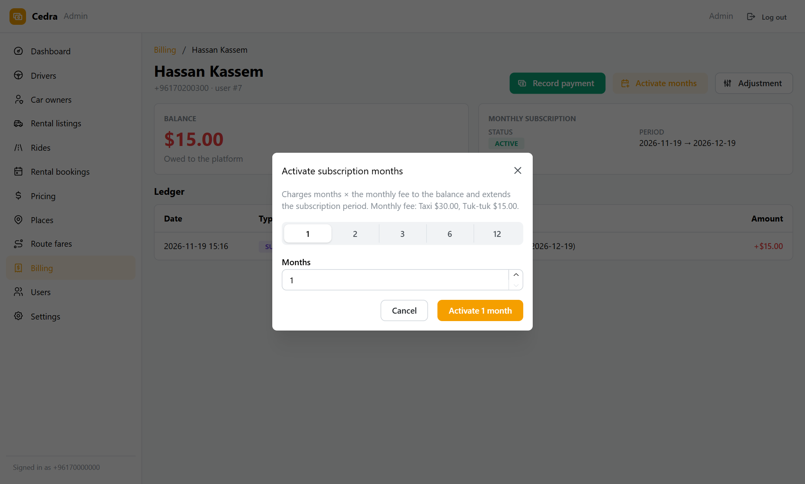
تفعيل أشهر اشتراك
التعديل اليدوي Adjustment
لتصحيح خطأ أو إعطاء خصم. اضغط Adjustment واختر:
Credit (reduce what they owe) — ينقص الدَّين (خصم أو تعويض).
Charge (increase what they owe) — يزيد الدَّين (تصحيح مبلغ ناقص).
ثم اكتب المبلغ والسبب في Note (إجباري — اكتب السبب دائماً).
الحد الأقصى للدَّينإذا تجاوز دَين السائق الحدّ المكتوب في الإعدادات (Maximum debt، مثلاً $20)، يُمنع من الاتصال واستقبال المشاوير حتى يدفع. هذا يحميك من تراكم الديون.
14
المستخدمون
Users
قائمة بكل الحسابات (ركاب، سائقون، أصحاب سيارات). ابحث بالاسم أو رقم الهاتف.
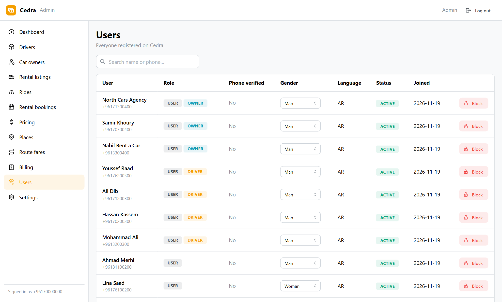
قائمة المستخدمين
حظر مستخدم
ابحث عن المستخدم واضغط Block، ثم أكّد بـ Block user.
المستخدم المحظور لا يستطيع الدخول إلى التطبيق، وإذا كان سائقاً يُفصل فوراً.
لإلغاء الحظر اضغط Unblock.
متى أحظر ومتى أوقف؟
لسائق عليه شكاوى استعمل الإيقاف من صفحة السائقين (الفصل 5) — يبقى يستطيع استعمال التطبيق كراكب. الحظر للحالات الخطيرة (احتيال، إساءة) ويمنع الحساب بالكامل.
لا يمكنك حظر حسابك أنت (لا يظهر زر بجانبه).
15
الإعدادات
Settings
إعدادات عامة لكل المنصّة. بعد أي تعديل اضغط Save settings أسفل الصفحة. Reset يرجع الأرقام كما كانت قبل التعديل.
صفحة الإعدادات
الإعداد
معناه
مثال
Ride commission
نسبة المنصّة من كل مشوار مكتمل (لسائقي خطة العمولة فقط).
10%
Rental commission
نسبة المنصّة من كل إيجار مكتمل (ليس على سيارات المنصّة).
10%
Monthly fee — Taxi
الاشتراك الشهري لسائق التاكسي.
$30
Monthly fee — Tuk-tuk
الاشتراك الشهري لسائق التوك توك.
$15
Maximum debt
إذا تجاوز دَين السائق هذا الرقم، لا يستطيع العمل حتى يدفع.
$20
LBP rate
سعر الدولار بالليرة. كل الأسعار بالليرة في التطبيق تُحسب منه. حدّثه عند تغيّر السعر.
89,500
Fare rounding
تقريب السعر المحسوب للأعلى. 0.5 يعني أن 3.20 تصبح 3.50.
$0.5
Search radius
المسافة التي يُبحث فيها عن سائقين حول الراكب.
5 كم
Offer timeout
كم ثانية ينتظر الطلب قبل أن ينتهي إذا لم يقبله أحد.
60 ثانية
Support phone
رقم الدعم الذي يظهر للركاب والسائقين في التطبيق.
+96170000000
نصائح
إذا الركاب يشتكون "ما في سائقين"، جرّب زيادة Search radius (مثلاً إلى 8 كم) أو Offer timeout (إلى 90 ثانية).
تغيير نسبة العمولة يُطبّق على المشاوير التي تنتهي بعد التغيير فقط.
16
المهام اليومية والأسبوعية والشهرية
☀️ كل يوم (10 دقائق)
افتح Dashboard.
راجع السائقين بالانتظار ووافق أو ارفض.
راجع أصحاب السيارات والسيارات بالانتظار.
في Rides اختر In progress: هل يوجد مشوار عالق منذ ساعات؟
سجّل كل الدفعات التي استلمتها اليوم.
أكّد حجوزات سيارات المنصّة الجديدة.
📅 كل أسبوع
في Billing رتّب حسب الرصيد واتصل بأكبر المدينين.
راجع المشاوير Expired: كثرتها تعني أنك تحتاج سائقين أكثر في تلك المنطقة.
راجع المشاوير الملغاة وأسبابها.
حدّث سعر صرف الليرة إذا تغيّر.
🗓️ كل شهر
فعّل أشهر الاشتراك لسائقي الخطة الشهرية الذين دفعوا.
راجع أسعار الخطوط مع أسعار الشارع (خاصة عند تغيّر سعر البنزين).
راجع السائقين ذوي التقييم المنخفض.
اطلب من المطوّر نسخة احتياطية من قاعدة البيانات.
⛽ عند تغيّر سعر البنزين أو الدولار
حدّث LBP rate في الإعدادات.
حدّث أسعار الخطوط في Route fares.
حدّث سعر الكيلومتر في Pricing.
أعلم السائقين بالأسعار الجديدة.
17
مشاكل شائعة وحلولها
المشكلة
السبب والحل
سائق يقول: "ما عم يخليني أشتغل / أصير Online"
افتحه في Drivers ثم Billing. الأسباب الممكنة ثلاثة فقط:
حسابه غير مقبول أو موقوف ← راجع حالته.
على الخطة الشهرية واشتراكه منتهٍ ← فعّل شهراً بعد أن يدفع.
دَينه أكبر من الحد الأقصى ← سجّل دفعة منه.
راكب يقول: "ما حدا قبل المشوار"
لا يوجد سائق متصل قريب منه. تحقّق من عدد السائقين المتصلين في Dashboard. يمكنك زيادة Search radius أو Offer timeout.
السعر الثابت لم يظهر، ظهر سعر محسوب
راجع الفصل 12: الوضع Fixed route، المكانان مفعّلان ويغطيان الموقعين، والخط موجود لهذا النوع.
السعر بالليرة غير صحيح
حدّث LBP rate في الإعدادات. ملاحظة: المشوار القديم يحتفظ بسعر الصرف وقت طلبه.
سائق يريد تغيير خطته (عمولة ↔ شهري)
يستطيع ذلك بنفسه من تطبيقه وهو غير متصل. إذا اختار الشهري، فعّل له الاشتراك بعد الدفع.
مشوار عالق "In progress" منذ وقت طويل
اتصل بالسائق. إذا انتهى المشوار فعلاً اطلب منه الضغط على "إنهاء" (لتُحسب العمولة). إذا لم يحصل، ألغِه من Cancel ride.
صاحب سيارة يقول إن سيارته اختفت من التطبيق
غالباً عدّل الماركة أو الموديل أو الوصف فرجعت إلى PENDING. راجعها في Rental listings ووافق عليها.
زبون لا يستطيع الحجز بدون سائق
يجب أن يرفع صورة رخصة القيادة من التطبيق أولاً (حسابي ← المستندات).
لا أستطيع حذف مكان
عليه سيارات إيجار. ألغِ تفعيله بدلاً من الحذف.
سجّلت دفعة بالغلط
لا يوجد حذف للحركات (للأمان). أضف Adjustment من نوع Charge بنفس المبلغ واكتب "تصحيح دفعة خاطئة".
أريد إضافة مدير ثانٍ أو تغيير كلمة سر المدير
غير متوفر من لوحة التحكم حالياً. اطلب ذلك من المطوّر.
رمز التحقق (SMS) لا يصل للمستخدمين
إرسال الرسائل يحتاج ربط مزوّد SMS/WhatsApp. هذا عمل المطوّر قبل الإطلاق الرسمي.
18
قاموس الكلمات
على الشاشة
بالعربي
Approve / Reject
قبول / رفض
Suspend / Reactivate
إيقاف / إعادة تفعيل
Pending
بانتظار المراجعة
Online / Offline
السائق متصل ويستقبل مشاوير / غير متصل
Fare
أجرة المشوار
Commission
عمولة المنصّة
Balance (owed)
الرصيد المستحق (الدَّين)
Ledger
سجلّ الحركات المالية
Record payment
تسجيل دفعة
Adjustment
تعديل يدوي على الرصيد
Subscription
الاشتراك الشهري
Pickup / Dropoff
مكان الانطلاق / مكان الوصول
Self drive / With driver
إيجار بدون سائق / مع سائق
Deposit
التأمين (يُدفع ويُرجع باليد)
Listing
سيارة معروضة للإيجار
Booking
حجز إيجار
Platform car
سيارة تملكها المنصّة
Agency / Individual
مكتب تأجير / فرد
Place / Radius
مكان (بلدة) / نصف القطر
Route fare
سعر الخط الثابت
Both ways / Bidirectional
بالاتجاهين
Expired
انتهت مهلة الطلب ولم يقبله أحد
Timeline
التسلسل الزمني
تحتاج مساعدة؟لأي مشكلة تقنية (السيرفر لا يعمل، نسخ احتياطي، إضافة مدير، ربط SMS) تواصل مع فريق التطوير.